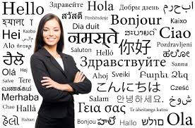

When I was a kid, I was preoccupied with drawing. I drew all over our dictionaries and almanacs at home. I spent the entire class hours drawing on my notebooks and not listening to a word the teacher says. I drew with my sisters and brothers. Even as I lie in bed, I draw imaginary figures in the air with my fingers. I was also very into dancing and singing. According to my parents, whenever they play music in the stereo or from a radio, I immediately sway and shake and mumble along with the song.
When I got in highschool, things got pretty serious and I grew out my playful stage. I focused more on studying and was able to excel in our class. I spent my vacant hours burried in books in the library. I never got into sports because I was so bad at it, and instead joined academic competitions outside of school. I never experienced the dating and flirting thing during highschool because I was so preoccupied in improving my grades. Watching cartoons and anime was my sole form of entertainment. I became book smart with the maturity of a 6 year old.
Now I am now in my final year in college. As I remember my days in elementary and highschool, I realized that things have been drastically different. I am no longer book smart, but I now have the maturity of a 20[-something] year old person. I no longer draw and sing, but I still dance. I no longer excel in class, but I continue on learning and pushing my limits. I have experienced dating flirting, and realized fairytales, animes, and movies are a load of bull. I am wiser and stupider in a lot of ways, but I keep on striving and moving forward.
I imagine myself as a sucessful career woman in a few years. I also picture myself as a polyglot, being able to communicate with a lot of people while travelling to different countries. I'm also considering the possibility of getting into law school, and hopefully becoming a sucessful practitioner of law in the future.